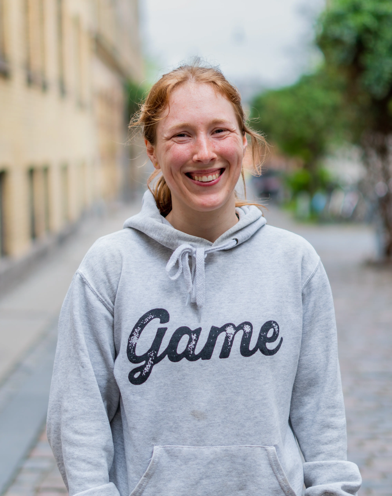
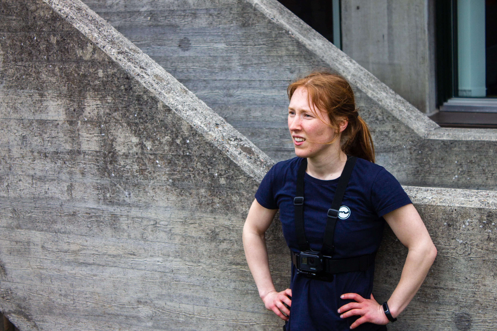
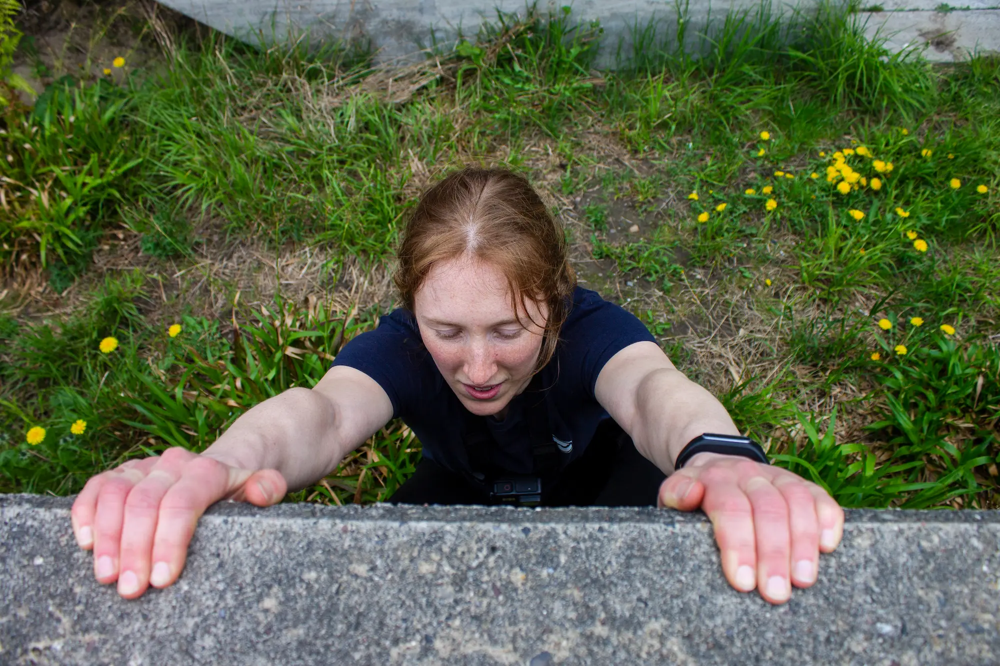
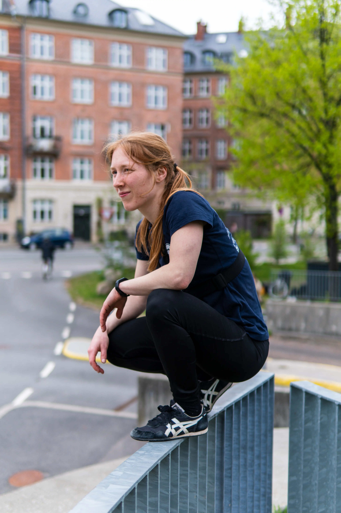
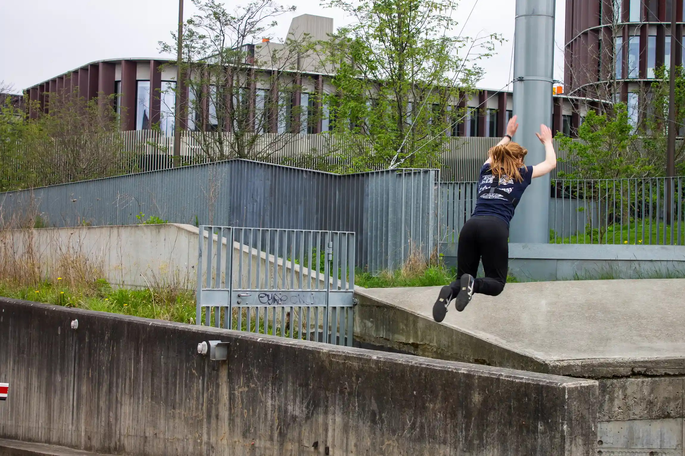

Mere end bare en bevægelsesform

Maria - Parkourudøver
"Parkour er en slags sport eller ihverfald en bevægelsesform, Hvor
man bevæger sig frit ude i byrummet, uden så mange regler.
Så er der også nogle, det synes jeg måske også selv, der vil sige
at det ikke bare er en bevægelsesform, men også en slags måde at
anskue verden på."
Hør mere i vidoen her
Billeder



